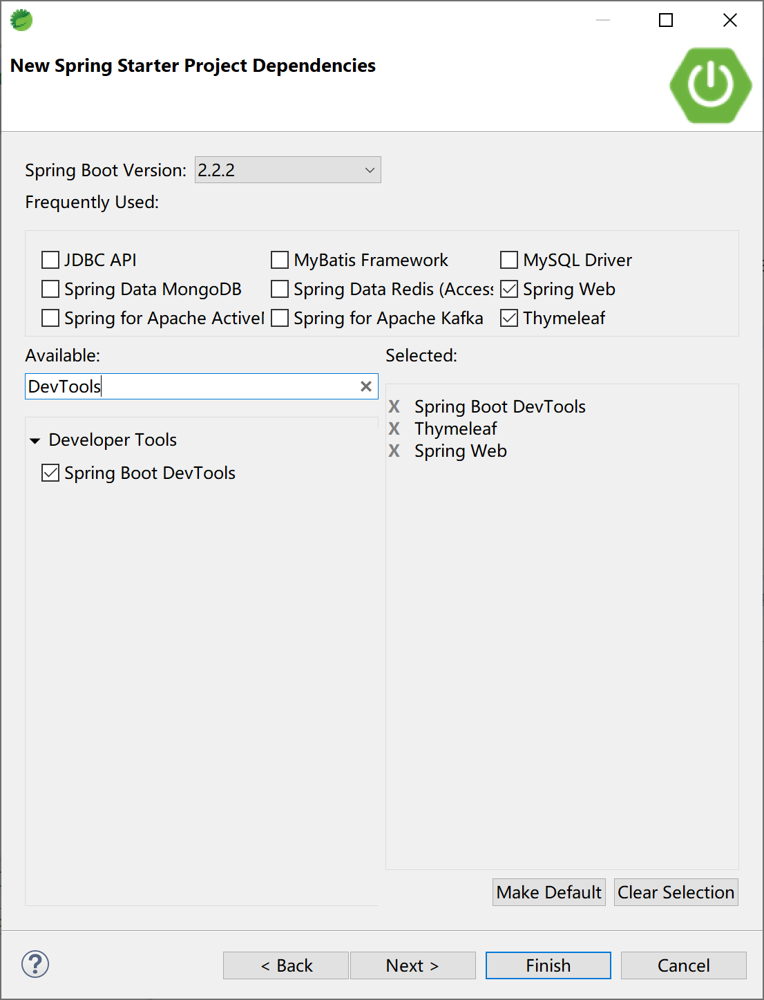
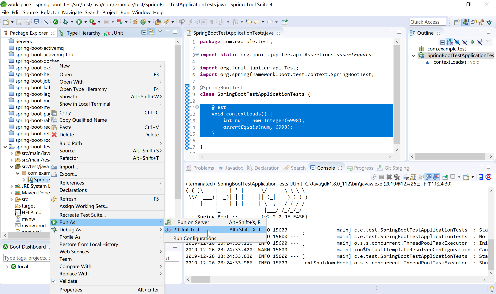
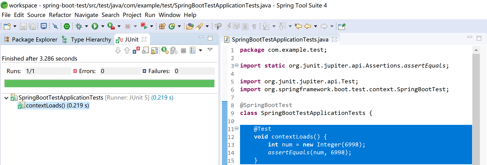
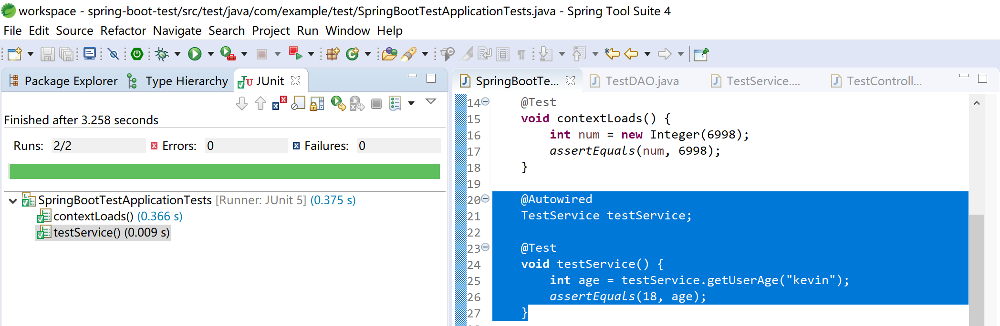
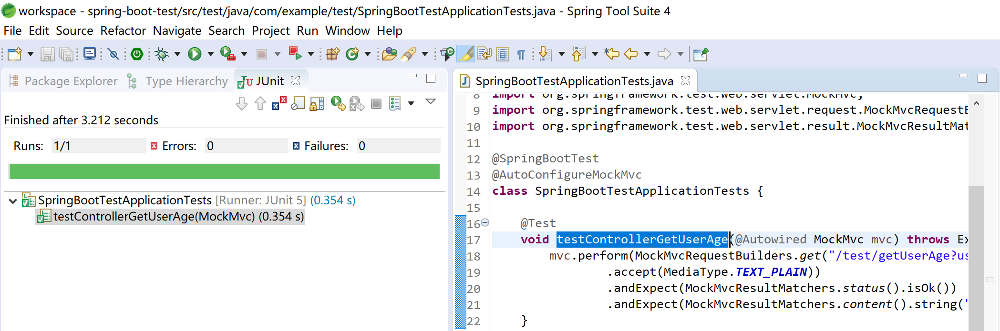
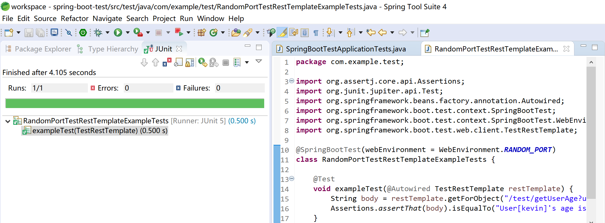

11.1 Spring Boot中的单元测试
单元测试是指对软件中的最小可测试单元进行检查和验证，单元测试归属于白盒测试。
这个定义有点抽象，下面举几个单元测试的特性，大家感受一下：
- 一般是一个函数配几个单元测试；
- 单元测试不应该依赖外部系统；
- 单元测试运行速度很快；
- 单元测试不应该造成测试环境的脏数据；
- 单元测试可以重复运行。
单元测试使得我们可以放心修改、重构业务代码，而不用担心修改某处代码后带来的副作用。
单元测试可以帮助我们反思模块划分的合理性，如果一个单元测试写得逻辑非常复杂、或者说一个函数复杂到无法写单元测试，那就说明模块的抽象有问题。
单元测试使得系统具备更好的可维护性、具备更好的可读性。对于团队的新人来说，可以从单元测试入手阅读代码，进而熟悉系统的逻辑。
优秀的开源框架，都配有完善的单元测试套件（Test Suite），以保证代码质量。
越是底层的代码，越是被更多客户调用的代码，越应该实践TDD（Test-Driven Development，测试驱动开发）。
测试驱动开发的基本思想就是在开发功能代码之前，先编写测试代码。也就是说在明确要开发某个功能后，首先思考如何对这个功能进行测试，并完成测试代码的编写，然后编写相关的代码满足这些测试用例。然后循环进行添加其他功能，直到完全部功能的开发。
虽然，我们日常工作中不会为每一段业务逻辑（类或方法）提供单元测试，但是针对大部分的产品级业务系统（主要工作是在某一技术基础平台上实现业务逻辑），都应该写单元测试。
大部分开发人员使用的单元测试框架都是JUnit，这也是Spring Boot的选择。
11.1.1 使用单元测试
Spring Boot官方文档，对如何进行测试进行了充分的说明。
Spring Boot provides a number of utilities and annotations to help when testing your application. Test support is provided by two modules:
spring-boot-testcontains core items, andspring-boot-test-autoconfiguresupports auto-configuration for tests.
使用Spring Starter创建项目时，默认就添加了spring-boot-starter-test依赖。

查看项目pom文件中的单元测试依赖：
<dependency>
<groupId>org.springframework.boot</groupId>
<artifactId>spring-boot-starter-test</artifactId>
<scope>test</scope>
<exclusions>
<exclusion>
<groupId>org.junit.vintage</groupId>
<artifactId>junit-vintage-engine</artifactId>
</exclusion>
</exclusions>
</dependency>
spring-boot-starter-test启动器依赖提供如下支持库：
JUnit 5（包括与JUnit 4向后兼容的老式引擎）：Java领域的单元测试事实标准，使用最广泛的测试支持库。
Spring Test和Spring Boot Test：对Spring Boot应用提供集成测试支持。
AssertJ：Java领域常用的功能完备的断言库。
Hamcrest：一个匹配对象的库（也称为约束或谓词）。
Mockito：一个Java模拟框架，比如模拟http容器环境。
JSONassert：JSON的断言库。
JsonPath：JSON的XPath支持库。
Spring Boot认为这些公共库在编写测试时很有用。如果这些库不适合我们的需要，也可以手动添加自己喜欢的测试依赖库。
通过查看org.springframework.boot:spring-boot-starters依赖，可以看到其依赖的JUnit的版本信息
<dependency>
<groupId>org.junit.jupiter</groupId>
<artifactId>junit-jupiter</artifactId>
<version>5.5.2</version>
<scope>compile</scope>
</dependency>
打开Spring Boot创建的项目中的默认单元测试入口类SpringBootTestApplicationTests：
package com.example.test;
import org.junit.jupiter.api.Test;
import org.springframework.boot.test.context.SpringBootTest;
@SpringBootTest
class SpringBootTestApplicationTests {
@Test
void contextLoads() {
}
}
在contextLoads方法中添加一个断言：
@Test
void contextLoads() {
int num = new Integer(6998);
assertEquals(num, 6998);
}
选中单元测试入口类，运行JUnit Test：

查看单元测试运行结果，如果没有错误，会出现熟悉的绿色长条。

11.1.2 普通后台代码测试
添加测试用的DAO类TestDAO，模拟从数据库中查询数据后返回用户年龄。其业务逻辑是“kevin用户的年龄为18岁”。
package com.example.test.dao;
import org.springframework.stereotype.Repository;
@Repository
public class TestDAO {
//模拟从数据库访问数据后返回用户的年龄
public int getUserAge(String userId) {
int result = 0;
if (userId.equals("kevin")) {
result = 18;
} else if (userId.equals("roy")) {
result = 12;
} else {
result = 28;
}
return result;
}
}
添加测试用服务类TestService，使用TestDAO从数据库（模拟）中获取用户年龄。
package com.example.test.service;
import org.springframework.beans.factory.annotation.Autowired;
import org.springframework.stereotype.Service;
import com.example.test.dao.TestDAO;
@Service
public class TestService {
@Autowired
TestDAO testDAO;
public int getUserAge(String userId) {
return testDAO.getUserAge(userId);
}
}
在测试启动类中添加测试方法testService，使用注入的TestService获取用户kevin的年龄，并做相等断言（年龄等于18）。
@Autowired
TestService testService;
@Test
void testService() {
int age = testService.getUserAge("kevin");
assertEquals(18, age);
}
运行测试，查看测试结果。

11.1.3 使用Mock测试控制层
由于控制器层会从浏览器接收用户的输入，所以在对测试控制层进行单元测试时，需要对Spring MVC和Servlet容器进行模拟，具体的模拟类为MockMvc。
修改测试启动类，为其添加@AutoConfigureMockMvc注解，启动MockMvc，创建testControllerGetUserAge测试方法，注意理解其中使用的MockMvc.perform方法，MockMvcRequestBuilders.get方法，MockMvcResultMatchers.status方法和MockMvcResultMatchers.content方法。
package com.example.test;
import org.junit.jupiter.api.Test;
import org.springframework.beans.factory.annotation.Autowired;
import org.springframework.boot.test.autoconfigure.web.servlet.AutoConfigureMockMvc;
import org.springframework.boot.test.context.SpringBootTest;
import org.springframework.http.MediaType;
import org.springframework.test.web.servlet.MockMvc;
import org.springframework.test.web.servlet.request.MockMvcRequestBuilders;
import org.springframework.test.web.servlet.result.MockMvcResultMatchers;
@SpringBootTest
@AutoConfigureMockMvc
class SpringBootTestApplicationTests {
@Test
void testControllerGetUserAge(@Autowired MockMvc mvc) throws Exception {
mvc.perform(MockMvcRequestBuilders.get("/test/getUserAge?userId=kevin")
.accept(MediaType.TEXT_PLAIN))
.andExpect(MockMvcResultMatchers.status().isOk())
.andExpect(MockMvcResultMatchers.content().string("User[kevin]'s age is: 18."));
}
}
运行JUnit Test，检查测试结果：

11.1.4 运行服务器后测试
有时候我们需要在一个完整运行的服务器中进行控制层的测试（模拟用户的浏览器操作行为），这个时候，我们可以使用Spring Boot提供的TestRestTemplate模板类来完成对运行中的服务器进行测试。
这个行为，已经不太像单元测试了，我个人认为有点儿像自动化测试了。
package com.example.test;
import org.assertj.core.api.Assertions;
import org.junit.jupiter.api.Test;
import org.springframework.beans.factory.annotation.Autowired;
import org.springframework.boot.test.context.SpringBootTest;
import org.springframework.boot.test.context.SpringBootTest.WebEnvironment;
import org.springframework.boot.test.web.client.TestRestTemplate;
@SpringBootTest(webEnvironment = WebEnvironment.RANDOM_PORT)
class RandomPortTestRestTemplateExampleTests {
@Test
void exampleTest(@Autowired TestRestTemplate restTemplate) {
String body = restTemplate.getForObject("/test/getUserAge?userId=kevin", String.class);
Assertions.assertThat(body).isEqualTo("User[kevin]'s age is: 18.");
}
}
运行JUnit Test，然后查看测试结果：

本小节示例项目代码：
https://github.com/gyzhang/SpringBootCourseCode/tree/master/spring-boot-test